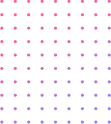

Made for You
For dRTPs who've been overlooked
You've put in the years. You know your field. PeerLadder is for digital Research Technical Professionals from underrepresented backgrounds who are ready to step into leadership – without having to fit a mould that was never designed for them. If the leadership table in your organisation doesn't look like you, this programme was built with you in mind.
Genuine Peer Mentoring
Not a workshop tick-box.
PeerLadder brings together a small cohort of peers who understand your world – the culture, the challenges, the particular oddities of research infrastructure careers. Monthly peer-mentoring sessions, structured group work, and two workshops facilitated by OLS, specialists in open and inclusive research practice.
A Proper Programme
May 2026 – March 2027
This is a structured, funded commitment – not a one-off event. Virtual onboarding in May, an in-person workshop in Manchester in June (travel and accommodation covered), a virtual leadership workshop in July, and monthly peer-mentoring sessions through to March 2027. Everything provided, nothing left to chance.
Do You Qualify?
Three things to check
You'll need at least three years in a dRTP or equivalent technical research role, to be based at a UK research-performing organisation, and a genuine interest in developing your leadership – formal or otherwise. No prior leadership experience required. The application itself is straightforward: four questions, around 150 words each.
Peer Ladder builds on a proven European model (ELEAD) that successfully enabled women leaders within the European ELIXIR life-science infrastructure. Read what they thought to say about it
By setting aside time for yourself and engaging in honest conversations, you investin your future as a leader.”
ELEAD gave me the confidence and tools to take on bigger responsibilities and think more strategically about how I lead.”
These relationships have become some of the most valuable in my professional network. I know I can reach out to these colleagues not only for advice but also for encouragement, and that sense of community has been one of the most valuable outcomes of the ELEAD experience.”
It’s a great programme that offers the space and guidance to grow both personally and professionally. You gain a deeper understanding of your leadership style, strengths and values – and you connect with inspiring peers who share similar ambitions.”
